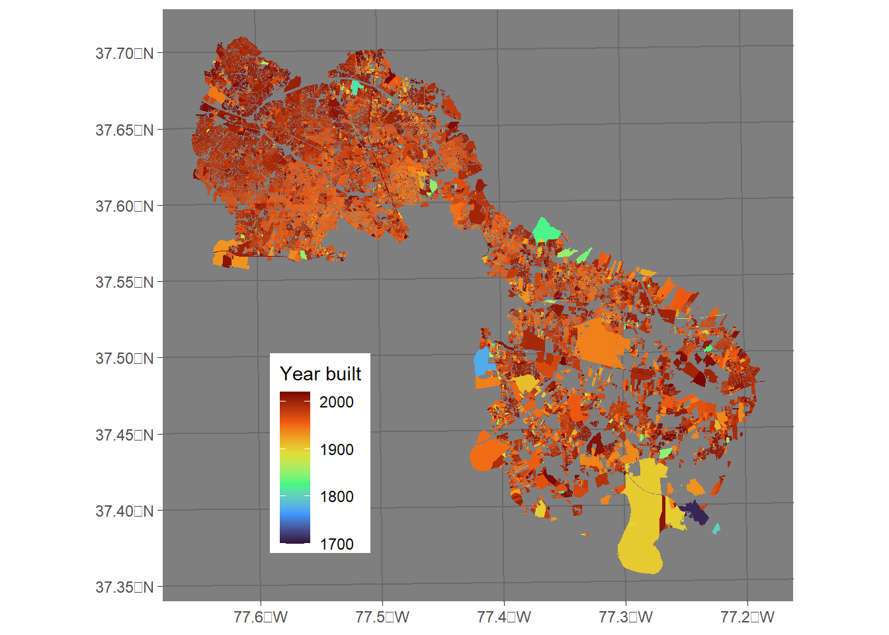
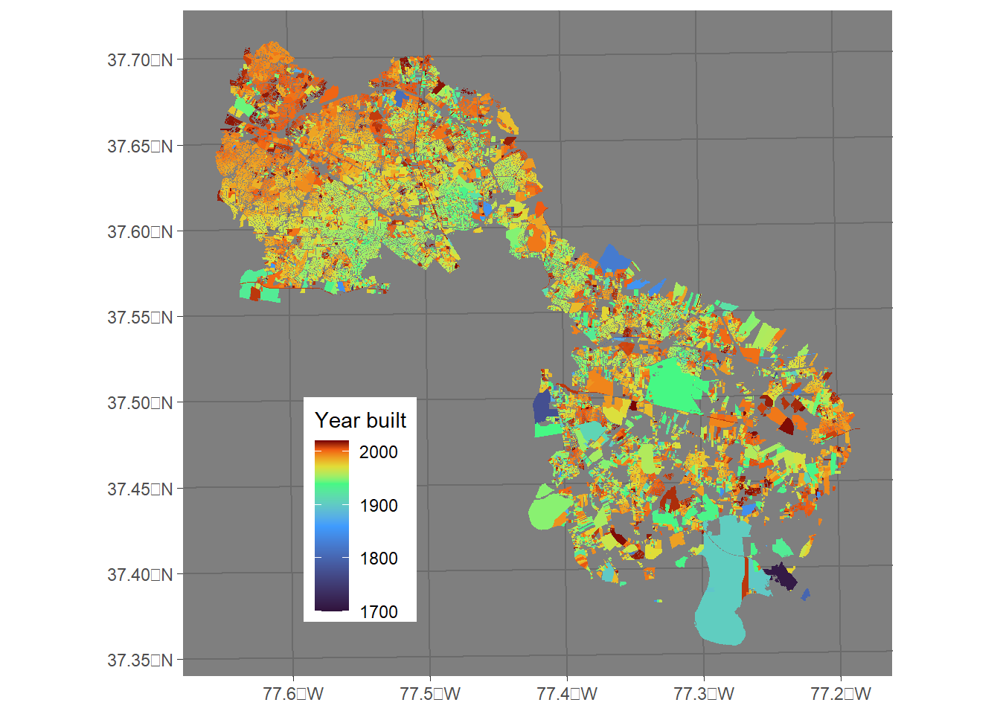

![]()
library(sf)
library(geoarrow)
henrico <- st_read('tax_parcels_and_cama_data.shp')
write_geoparquet(henrico, 'data/henrico_parcels.parquet')Age of Henrico County Virginia’s structures
R
Henrico
Web scraping
Land use
geoarrow
arrow
A recent tweet showed the age of the buildings in Groningen, Netherlands super-imposed on LiDAR data for some perspective.
This got me thinking – what would Henrico look like? I’m going to take the cheap way out and not mess with LiDAR at the moment, but the county provides their Tax Parcels and CAMA Data for easy download.
Note
To skip the coding and jump straight to the picture, click here!
This is a pretty big file – just under 121 thousand parcel outlines, with 84 different bits of information per property!
Enter: geoarrow
I’ve been interested in playing around with the geoarrow package since watching Dewey Dunnington’s presentation at the 2022 RStudio conference. It leverages the Apache Arrow platform, resulting in rapid out-of-memory subsetting and manipulation of spatial data. The Parquet format used by Arrow also does a great job at compression, resulting in a much smaller file to toss around. When compared to a shapefile (which necessitates lugging around a bunch of other files), this seems like a much better way to store and access a large file.
.shp to .parquet
The first step is to convert the provided shapefile into the arrow-readable parquet format. I’ll do this using the sf and geoarrow packages:
East enough – and switching from the shapefile to parquet reduced the file size by 70%!
Pulling in the data
Using the newly-formed parquet file, it’s straightforward to only select two of the 84(!) columns and drop any structures without a construction date or a date that isn’t reasonable (in the future or before the settlement of the county).
library(arrow)
library(dplyr)
hc_parcels <-
open_dataset('data/henrico_parcels.parquet') |>
select(YEAR_BUILT, geometry) |>
filter(!is.na(YEAR_BUILT) & YEAR_BUILT > 1500 & YEAR_BUILT < 2100) |>
geoarrow_collect_sf()Plot
Now just a matter of plotting using ggplot2.
library(ggplot2)
ggplot(data = hc_parcels) +
geom_sf(aes(fill = YEAR_BUILT), lwd = 0, color = NA)+
scale_fill_viridis_c(option = 'turbo') +
labs(fill = 'Year built') +
theme_dark() +
theme(legend.position = c(0.25, 0.25))
The structures built recently blend together in burnt red, while the older building really pop. What this really tells us, though, is that the majority of the development in Henrico County has happened since 1950 or so.
It makes sense that the number of structures built per year would be greater in, say, 2000 compared to 1700 – homes are easier to build and we have a much greater population. In order to see the subtle patterns in development in recent years, we need to adjust the color scale to change more rapidly as time goes on.
This can be accomplished using the values argument to scale_fill_viridis_c. Values need to be on the 0-to-1 scale. I’m going to shift the breaks in the color scale toward the last 25% of years.
ggplot(data = hc_parcels) +
geom_sf(aes(fill = YEAR_BUILT), lwd = 0, color = NA)+
scale_fill_viridis_c(option = 'turbo',
values = c(0, 0.5, 0.75, 0.85, 0.95, 1)) +
labs(fill = 'Year built') +
theme_dark() +
theme(legend.position = c(0.25, 0.25))
So, what does this show us?
- The West End has a structure on nearly every parcel. This is especially apparent when comparing to Varina, where the blank gray spaces signify a plot of land with no listed structure.
- The outskirts of Richmond (the “bite” in the middle) were developed heavily in the 1950s. The far West End, however, didn’t start to get developed until near 2000.
- There’s a progressive structure to the development of the West End, as can be seen in the gradient of color.